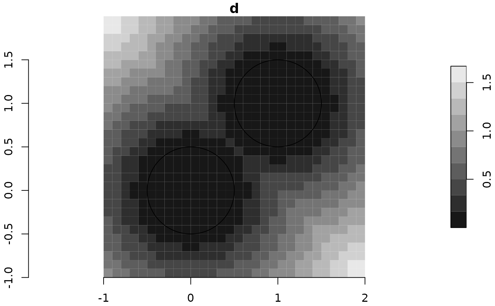

Given a stars raster and an sf vector layer, returns a new raster with the distances of each cell centroid to the nearest feature in the vector layer.
dist_to_nearest(x, v)
| x | A |
|---|---|
| v | An |
A stars raster with distances to nearest feature
# Sample 'sf' layer x = st_point(c(0,0)) y = st_point(c(1,1)) x = st_sfc(x, y) x = st_sf(x) x = st_buffer(x, 0.5) # Make grid r = make_grid(x, res = 0.1, buffer = 0.5) d = dist_to_nearest(r, x)#>#> | | | 0% | | | 1% | |= | 1% | |= | 2% | |== | 2% | |== | 3% | |== | 4% | |=== | 4% | |=== | 5% | |==== | 5% | |==== | 6% | |===== | 6% | |===== | 7% | |===== | 8% | |====== | 8% | |====== | 9% | |======= | 9% | |======= | 10% | |======= | 11% | |======== | 11% | |======== | 12% | |========= | 12% | |========= | 13% | |========= | 14% | |========== | 14% | |========== | 15% | |=========== | 15% | |=========== | 16% | |============ | 16% | |============ | 17% | |============ | 18% | |============= | 18% | |============= | 19% | |============== | 19% | |============== | 20% | |============== | 21% | |=============== | 21% | |=============== | 22% | |================ | 22% | |================ | 23% | |================ | 24% | |================= | 24% | |================= | 25% | |================== | 25% | |================== | 26% | |=================== | 26% | |=================== | 27% | |=================== | 28% | |==================== | 28% | |==================== | 29% | |===================== | 29% | |===================== | 30% | |===================== | 31% | |====================== | 31% | |====================== | 32% | |======================= | 32% | |======================= | 33% | |======================= | 34% | |======================== | 34% | |======================== | 35% | |========================= | 35% | |========================= | 36% | |========================== | 36% | |========================== | 37% | |========================== | 38% | |=========================== | 38% | |=========================== | 39% | |============================ | 39% | |============================ | 40% | |============================ | 41% | |============================= | 41% | |============================= | 42% | |============================== | 42% | |============================== | 43% | |============================== | 44% | |=============================== | 44% | |=============================== | 45% | |================================ | 45% | |================================ | 46% | |================================= | 46% | |================================= | 47% | |================================= | 48% | |================================== | 48% | |================================== | 49% | |=================================== | 49% | |=================================== | 50% | |=================================== | 51% | |==================================== | 51% | |==================================== | 52% | |===================================== | 52% | |===================================== | 53% | |===================================== | 54% | |====================================== | 54% | |====================================== | 55% | |======================================= | 55% | |======================================= | 56% | |======================================== | 56% | |======================================== | 57% | |======================================== | 58% | |========================================= | 58% | |========================================= | 59% | |========================================== | 59% | |========================================== | 60% | |========================================== | 61% | |=========================================== | 61% | |=========================================== | 62% | |============================================ | 62% | |============================================ | 63% | |============================================ | 64% | |============================================= | 64% | |============================================= | 65% | |============================================== | 65% | |============================================== | 66% | |=============================================== | 66% | |=============================================== | 67% | |=============================================== | 68% | |================================================ | 68% | |================================================ | 69% | |================================================= | 69% | |================================================= | 70% | |================================================= | 71% | |================================================== | 71% | |================================================== | 72% | |=================================================== | 72% | |=================================================== | 73% | |=================================================== | 74% | |==================================================== | 74% | |==================================================== | 75% | |===================================================== | 75% | |===================================================== | 76% | |====================================================== | 76% | |====================================================== | 77% | |====================================================== | 78% | |======================================================= | 78% | |======================================================= | 79% | |======================================================== | 79% | |======================================================== | 80% | |======================================================== | 81% | |========================================================= | 81% | |========================================================= | 82% | |========================================================== | 82% | |========================================================== | 83% | |========================================================== | 84% | |=========================================================== | 84% | |=========================================================== | 85% | |============================================================ | 85% | |============================================================ | 86% | |============================================================= | 86% | |============================================================= | 87% | |============================================================= | 88% | |============================================================== | 88% | |============================================================== | 89% | |=============================================================== | 89% | |=============================================================== | 90% | |=============================================================== | 91% | |================================================================ | 91% | |================================================================ | 92% | |================================================================= | 92% | |================================================================= | 93% | |================================================================= | 94% | |================================================================== | 94% | |================================================================== | 95% | |=================================================================== | 95% | |=================================================================== | 96% | |==================================================================== | 96% | |==================================================================== | 97% | |==================================================================== | 98% | |===================================================================== | 98% | |===================================================================== | 99% | |======================================================================| 99% | |======================================================================| 100%#> Error in if (useRaster) { if (check_irregular(x, y)) stop(gettextf("%s can only be used with a regular grid", sQuote("useRaster = TRUE")), domain = NA) if (!is.character(col)) { col <- as.integer(col) if (any(!is.na(col) & col < 0L)) stop("integer colors must be non-negative") col[col < 1L] <- NA_integer_ p <- palette() col <- p[((col - 1L)%%length(p)) + 1L] } zc <- col[zi + 1L] dim(zc) <- dim(z) zc <- t(zc)[ncol(zc):1L, , drop = FALSE] rasterImage(as.raster(zc), min(x), min(y), max(x), max(y), interpolate = FALSE)} else .External.graphics(C_image, x, y, zi, col): missing value where TRUE/FALSE needed